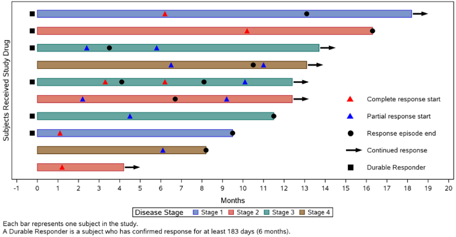
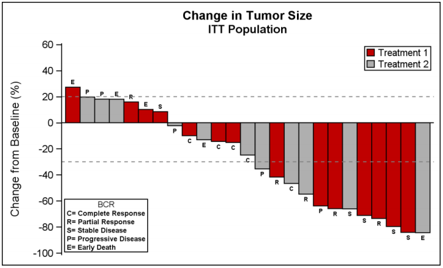
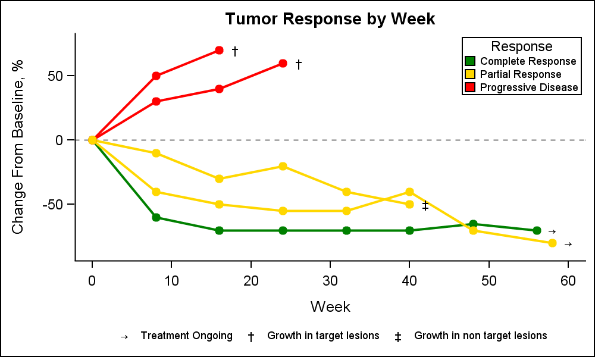

Graphs and Plots
Check these websites
- Here are some examples of complex graphs.
- Here there are instructions to play with the axis' attributes.
- Graphically speaking blog with useful tips for graphics.
- Welcome to the Three Ring %CIRCOS: An Example of Creating a Circular Graph without a Polar Axis
Basic ODS OptionsLink
You need to add this command to get the plots displayed in the output:
1 2 3 | |
When you add the ODS TRACE statement, SAS writes a trace record to the log that includes information about each output object (name, label, template, path):
1 2 3 | |
You produce a list of the possible output elements in the log that you may specify in the ODS SELECT/EXCLUDE statement:
1 2 3 | |
Yo can keeps some of the outputs in SAS-data-sets:
1 | |
- Remove date and pagination from the automatic output header:
1 | |
- Remove graph's external borders:
1 | |
Plot ProceduresLink
GPLOTLink
- Reference lines:
1 2 3 4 5 6 | |
SGPLOTLink
- Highlight a certain boxplot and get the plot narrower:
1 2 3 4 5 6 7 8 | |
Type of PlotsLink
Check these websites
Swimmer plotLink
A swimmer plot is a graphical tool involving horizontal bars that can be used to show multiple pieces of information about a given data set in one glance. In this example a swimmer plot is used to tell “a story” about the effects of a study treatment on tumor response for individual subjects in an oncology study. Through the use of a swimmer plot we are able to look at our data on an individual subject level rather than an aggregate level that is often done for “time to response” analysis using Kaplan-Meier methods.

Check these websites
Waterfall plotLink
A waterfall chart is commonly used in the Oncology domain to track the change in tumor size for subjects in a study by treatment. The graph displays the change in tumor size for each subject in the study by descending percent change from baseline. A bar is displayed for each subject in decreasing order. Each bar is classified by the treatment. The response category is displayed at the end of the bar. Reference lines are drawn at RECIST threshold of -30% and at 20%.

Check these websites
Spaghetti or spider plotLink
A spaghetti plot is a method of viewing data to visualize possible flows through systems. Flows depicted in this manner appear like noodles, hence the coining of this term. This method of statistics was first used to track routing through factories. Visualizing flow in this manner can reduce inefficiency within the flow of a system. Within medicine, they can illustrate the effects of drugs on patients during clinical trials. It can be used as another way of presenting the change from baseline for tumors for each subject in a study by week. The plot can be classified by response and stage.

Check these websites
SAS code examples
MiscellaneaLink
Available Colors at the SAS RegistryLink
You can check the list of SAS predefined colors and even list it using the SAS registry:
1 2 | |
Check this website